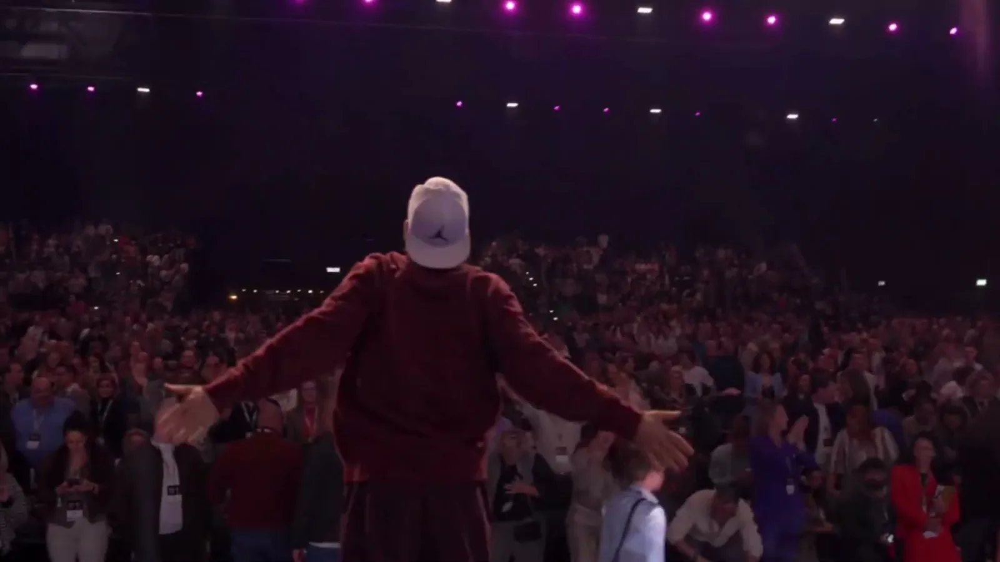

All accessPass 01
Iedereen doet mee, niemand kijkt toe
Larz krijgt de hele zaal overeind: van vijftig mensen in een studio tot meer dan vijfduizend in een arena. Zonder dat iemand zich opgelaten voelt.
Crowd warm-up
Boekbaar voor events in heel Nederland en daarbuiten

The Energy Man · Nike Master Trainer
Waarom Larz
Larz krijgt de hele zaal overeind: van vijftig mensen in een studio tot meer dan vijfduizend in een arena. Zonder dat iemand zich opgelaten voelt.
Opener, energy moment tussen twee sprekers of afsluiter: Larz stemt tempo, duur en toon af op je thema, je tijdslot en je publiek.
Als dj en producer draait Larz zijn eigen edits en mixen. Zo klopt de beat met het moment, en hoef jij geen aparte dj te regelen.
Drie podia

Voor eventorganisatoren
Een zaal die net binnenkomt, na de lunch inzakt of na acht uur programma nog één keer alles moet geven: Larz haalt hem op. Op congressen, sportevents, festivals en merkactivaties.

Voor sporters
Star Trainer bij Saints & Stars, met Holy Shred en Holy Box in City, West en South. Daarnaast gastlessen en masterclasses op conventies en festivals als Festyfit en HealthyFest.

Voor wie traint op de beat
Larz produceert en mixt zelf: workout-mixen voor trainers en sporters, een Spotify-playlist die meegroeit, en dj-sets die een event van warming-up naar feest brengen.
Showreel
Agenda
Mainstage Brabanthallen, Den BoschDrie dagen, elke dag een energy moment
Festyfit, ClubJoy15.45-16.45 uur
Alphen aan den Rijn
Amsterdam
AmsterdamTwee dagen
Wekelijkse lessen bij Saints & Stars staan op de lessenpagina

De man achter de energie
Hij gaf op zijn vijftiende zijn eerste les en staat nu ruim dertig jaar voor groepen: van een studio in Amsterdam tot het hoofdpodium van de Brabanthallen. Nike koos hem als Master Trainer, Saints & Stars als Star Trainer.
Wat hem anders maakt dan een trainer met een microfoon: hij is ook dj, producer en presentator. Daardoor voelt een energy moment van Larz als een show, niet als een gymles.
Deze week in Amsterdam
Rooster volgens larz.nl. Kijk voor de actuele planning en plekken in de Saints & Stars-app.

Train en feest op dezelfde beat
Larz produceert edits en mixen voor trainers, sporters en de dansvloer. Van "Wakker worden met Larz" op HealthyFest tot reworks van clubklassiekers.
Vertel kort wat voor event het is en hoeveel mensen er komen. Je mailt rechtstreeks met Larz zelf, zonder bureau ertussen.